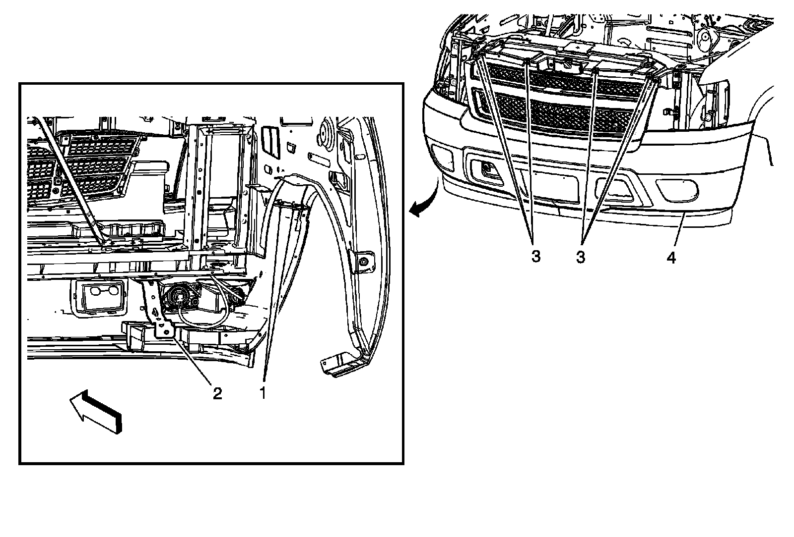
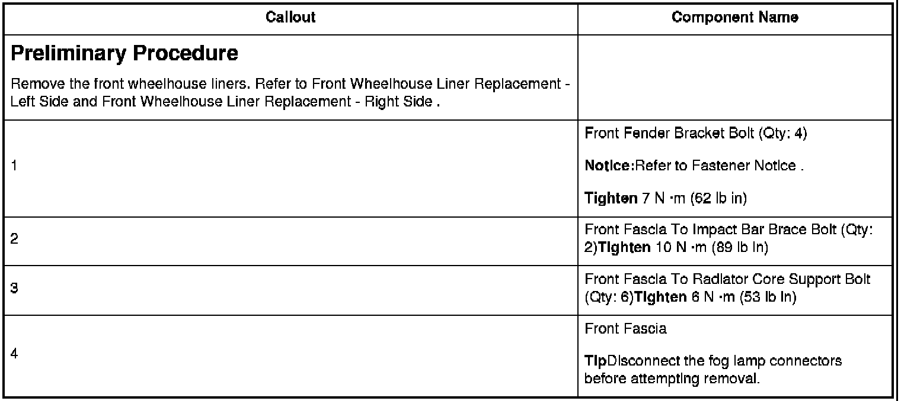

Operation CHARM
: Car repair manuals for everyone.
Home
>>
Cadillac
>>
2007
>>
Escalade ESV AWD V8-6.2L
>>
Repair and Diagnosis
>>
Body and Frame
>>
Bumper
>>
Front Bumper
>>
Front Bumper Cover / Fascia
>>
Service and Repair
>>
Front Bumper Fascia Replacement (Avalanche)
Front Bumper Fascia Replacement (Avalanche)
Front
Bumper
Fascia Replacement (Avalanche)


Preliminary Procedure
Notice:
Refer to.
Tighten
Tighten
Tighten
Tip
Disconnect the fog lamp connectors before attempting removal.